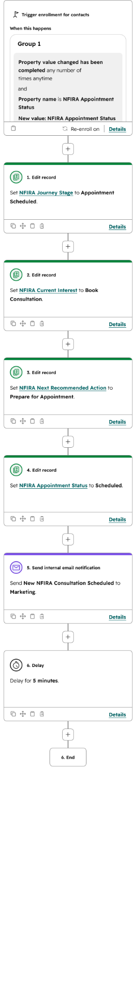

The problem
NFI Retirement Academy was a new program. It needed more than a registration form. A seminar with 50 or more registrants required registration, session assignment, reminders, attendance handling, appointment booking, staff notifications, follow-up, and reporting.
I owned the public-facing forms and pages as well as the HubSpot system that organized each contact after submission. There was no existing workflow to build from.
The data model
I created a shared set of contact properties that every workflow could update. These included Journey Stage, Entry Source, Current Interest, Next Recommended Action, Seminar Status, Seminar Date, and Appointment Status.
This gave the team one consistent view of where a person entered, what they wanted, what happened next, and who needed attention.

Workflow structure
Registration and session assignment
A seminar form submission records the entry source, marks the person as registered, assigns the selected session and date, sends confirmation, and alerts the internal team.
Date-based reminders
The reminder workflow checks whether a valid seminar date exists before sending the 7-day, 1-day, and day-of messages. Contacts leave the workflow when the assigned date has already passed or is missing.
Appointment progression
When an appointment is booked, HubSpot updates the Journey Stage, Current Interest, Next Recommended Action, and Appointment Status. It also sends an internal notification so the team can prepare.


Operational design
Automation was only one part of the system. I also designed attendee categories, QR resources, appointment cards, gift-card messaging, Microsoft Bookings setup, a manual scheduling backup, staff responsibilities, and post-event follow-up groups.
The manual controls were intentional. They protected the event when account access, calendar connections, or on-site booking made full automation impractical.
The system connects the website, HubSpot records, seminar dates, reminders, appointment scheduling, internal preparation, and follow-up. Each workflow handles one part while shared properties keep the full journey connected.
Outcome
The seminar process now has a repeatable operating structure instead of disconnected forms, spreadsheets, and manual messages. The team can see the contact's current stage, seminar status, appointment status, and next action in one record.
The system also includes fallback instructions and manual controls so another employee can continue the process without understanding every technical dependency.
What this demonstrates: CRM architecture, multi-branch automation, customer journey design, event operations, contingency planning, and ownership from public registration through internal follow-up.